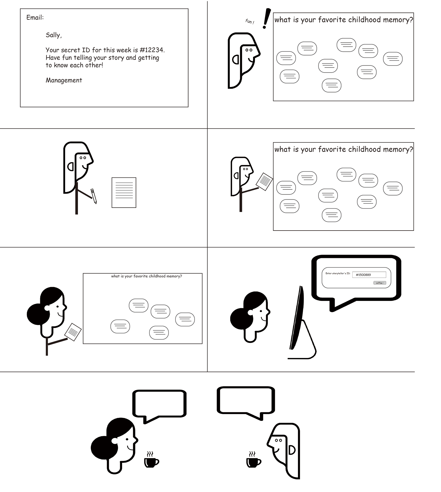

VML Design Challenge is part of the Seattle Interactive Conference, the biggest tech & business conference held annually in Seattle. This year, design challenge consisted of 2 parts - a 3-hours rapid design work and presenting to judges from VML. We were randomly assigned into groups and were given briefs of the tasks - "How to address the unconscious bias and make VML a more diverse company?"
Through interviewing VML employees, ideating, and brainstorming, we came up with a 2-parts solution to this problem. Our solution focused on motivating current and prospective VML employees to share their personal stories. This encouraged people to see and learn about each other from the lens of human nature, instead of the seeming background that defined them.
Our design was unanimously praised by all the judges, and won the first place in the design challenge.
After interviewing multiple VML employees and discussing within the team, we realized that different people understand "diversity" differently - e.g. race, sexuality, etc. - Therefore, in order for our design solution to reach a wider audience, we purposefully left "diversity" undefined and focused on the touch of human nature.
Our first solution targeted the company internal culture and encouraged employees to learn about each other without identifying each other with their different background. To do this, we imagined a physical storyboard hanging on the office wall, pairing with a simple semi-anonymous system.
Each week, a theme would be decided and written on the board, e.g. "what is your warmest childhood memory?" Employees were then allowed to write down their stories on a note card and post them on the storyboard.
We incorporated a semi-anonymous system to encourage employees to share their stories and connect with each other - each employee would be assigned a secret ID number each week, and they would write their secret ID number on the note card. If an individual found the story interesting, they could take down the card and entered the secret ID number to the online system, and sent the storyteller a coffee request. The secret storyteller could then accept and connect with the interested individual.
Our second solution targeted the hiring process. To allow hiring manager to learn about a candidate as the person they are, we imagined a system where candidates' friends would be include in the process. This is because our friends could provide insights into who the candidates are, compared to the indifferent resume and past employers' reference.
The process goes like this - the candidate would nominate one of their close friends (security measure would be set to make sure the nominees are close friends), who would be invited to share something about the candidate (either through email or postcard). This way, the hiring manager could get more insights on candidate's personalities and talents from a personal source.
By working with a team of strangers in an intense environment, I learned more about managing team conflict as well as working in a team. Moreover, through the process of conceptualizing in a very short time frame, I gained more knowledge on embracing and identifying opportunities in a highly ambiguous context.